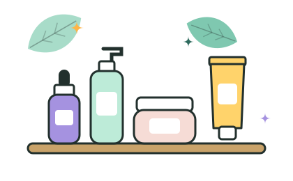

Agua micelar sin fragancia
Paso: Limpiar
- Ideal para
- Todo tipo de piel
- Ingrediente principal
- Micelas
- Para qué sirve
- Atrapan el maquillaje y el protector solar sin necesidad de frotar. Úsala como primer paso de la noche.
Conoce todos los productos de la guía, su ingrediente principal y para qué tipo de piel son ideales. Busca por nombre, ingrediente o tipo de piel.

13 productos
Paso: Limpiar

Paso: Limpiar

Paso: Limpiar

Paso: Tratar

Paso: Tratar

Paso: Tratar

Paso: Tratar

Paso: Hidratar

Paso: Hidratar

Paso: Hidratar

Paso: Proteger

Paso: Proteger

Paso: Proteger
No encontramos ese producto.
Prueba con otra palabra, como “hidratante” o “grasa”.
Algunos productos potencian sus beneficios al usarse juntos y otros conviene separarlos. Estas son las dudas más comunes.